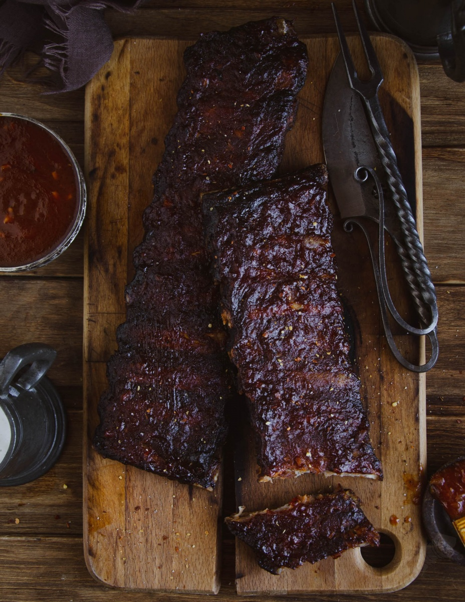

World of Warcraft's Beer Basted Boar Ribs

The trademark dish of the Thunderbrew Distillery in Dun Morough
"Nothing my tavern patrons enjoy more than some Beer Basted Boar Ribs!
Only problem is,
the local trapper who used to bring me supplies enlisted in the King's Army to help with the war on the Alliance
front." - Ragnar Thunderbrew
Ingredients
- Crag Boar Rib (1 rack)
- A flagon of Rhapsody Malt
To prepare (as advised by Ragnar himself!)
- Preheat grill to 450°F. Place 2 handfuls of wood chips directly on the grill grate and close the lid.
- Combine paprika, brown sugar, salt, pepper, garlic powder, onion powder and ground mustard in a small bowl. Mix with fingers until lump-free. Apply rub to both sides of each rib rack.
- In a medium saucepan, whisk together a flagon of Rhapsody Malt, vinegar, olive oil, onion, Goldshire sauce, salt and pepper. Bring to a simmer for 5 minutes.
- Place ribs on the grill grate over indirect heat . Close the lid and cook for 2 hours, basting with mop sauce every 30 minutes.
- Cook until the internal temperature reaches between 185°F and 190°F using an instant-read thermometer, about 2 hours.
- Remove ribs from foil and brush both sides with BBQ sauce. Let rest for 15 minutes before serving.
Return to main page